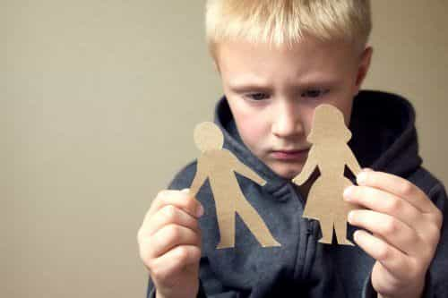

Corey is an iconoclast and the author of 'Man's Fight for Existence'. He believes that the key to life is for men to honour their primal nature. Visit his new website at primalexistence.com


If you see feminism for the toxic and corrosive ideology that corrupts women and society at large, then we must come to terms with the fact that American women—along with their Canadian, British, Australian, and other counterparts—should not be teachers who are responsible for the developmental years of children’s lives. The marriage between today’s feminized education system and modern women is ruining entire future generations with their incompetence, contempt, and brainwashing. I don’t expect things to change overnight, but the following points must be addressed regarding the nature of today’s female teachers.
Would you like to have a divorced Instragram whore as your child’s role model?
With just how low Western women have gone these days, it shouldn’t surprise anyone that female teachers are no exceptions—being in a position of teaching doesn’t suddenly make them morally upstanding. Really, why would anyone want their children to be taught by these women? Are we to believe that a woman who spent her entire adult life drinking and partying to suddenly become a mentor for our sons and daughters? If you can’t turn a whore into a housewife, the same is doubly true for those trying to pass off as educators.
I’ve met dozens of girls who were either studying or on their way to become teachers and the majority of them tended to be party girls with no real interest in intellectual pursuits.
The truth is that most female teachers don’t have any passion for teaching. They just want an easy and secure government job that will elevate their sense of self-importance. If you ever observe them in classrooms, you’ll know that they have no standards and enjoy texting and chatting on their phones during their class time. To them, it is the status of being a teacher that matters, not the substance of what that they can deliver to their pupils. These teachers don’t encourage independence and free thought and they’re not interested in letting students inquire and learn on their own; they’re more interested in having them do as they’re told as passive subjects in a controlled environment.

In addition to their lack of passion, the teachers and would-be teachers I’ve known throughout my life don’t seem to like children all. In spite of how much they profess their love of teaching kids, all these females tend to do is bitch non-stop about their “stupid” students while making minimal effort to guide them in their learning.

If you think feminist and progressive brainwashing is limited to colleges, you are wrong. Public schools and even kindergarten are now battlegrounds to teach young children about “gender fluidity” and other nightmarish garbage instead of preparing for their futures. And we all know that women are more likely to spread these progressive ideas than men (all the teachers I’ve had who preached progressivism were females), making them the primary offenders in indoctrinating children.

Yes, she has to do this in the classroom because she can’t signal her status on social media without it.
Teachers are in a delicate position of power to lead their students and women seem to love abusing that power. I’ve noticed that teaching jobs attract women who are unbearable control-freaks who love to tell others what to do and how to do them. These women care more about asserting their authority than in fostering a healthy learning environment.
As an anecdote, I had a friend who had the misfortune of having a feminist as his English teacher in high school. He told me that she would openly say things like “Why are all the boys so dumb?” and give all the girls bonus marks just for being girls while the boys were constantly graded low. When all the male students went to complain to the principal, the teacher naturally played the victim by claiming that the male students hated her just for being a feminist. The cuck of a principal didn’t take any action as a result and she was allowed to continue abusing her power.
I’m sure there are countless more feminist teachers who are denigrating the boys in every way imaginable so that they will not succeed. If this is not a systematic effort to bring down the male population, I don’t know what is.
What?! The school fired this lady because she refused to teach due to her phobia of children? Fucking misogynists.
It is clear that many women are not capable of handling the slightest stress that comes with teaching and maintaining a class. When I was in high school, I once had a female teacher walk out of the classroom and not return. This didn’t happen because the students were being dicks, but because she was getting too stressed and overwhelmed from… grading quizzes. Like most “strong and independent” women usually do, female teachers focus more on maintaining an outside shell and a facade of competence than delivering excellence.
Then there’s the recent issue of teachers calling the police because they are incapable of dealing with children themselves. In New Jersey for example, a female teacher called the police on her 3rd grader because the way he said “brownies” was misconstrued as being “racist” by another student (the fact that 3rd graders are even complaining about racism should be an alarm). That single incident is already insane enough, but in that elementary school alone, the police are apparently called as often as five times a day to handle incidents which the female teachers seem incapable of dealing with.
Many female teachers I’ve known all seemed to have varying degrees of emotional issues that should disqualify them as teachers. And as more and more American women are becoming mentally ill, we can expect increasing number of female teachers to be unstable and unreliable in the future. And as they say, crazy people make other people crazy.
The number of female teachers who are having sex with their students are on a dramatic rise, which I suspect is due to laxer punishments and consequences for women as well as the you go, girl! attitude promoted in our culture. But I suppose expecting these young women—who aren’t married and don’t even have children of their own—to behave in any other way is asking for too much.

This one posted pictures of herself nude and smoking weed on Twitter as well as calling her student “jailbait.” How many more women of this quality are passing off as educators today?
Ideally, the public education should be abolished and be replaced by homeschooling or other more effective means of preparing children for their future, but as long as boys are made to go to school, American women need to be screened better or be completely removed from teaching positions lest they do more harm than good. Yes, there are male teachers who are just as bad, but know that early education is almost completely dominated by women and the few men who are teachers are heavily influenced by them.
And as recent studies show, feminism is having a negative impact on boys while eliminating such feminist bias from teachers erased the boys’ failing grades, proving that feminism is systematically harming the male population from a young age. As long as these feminism-infected women are in charge of the future generation, don’t expect the society to change for the better.
Read More: 6 Reasons Why You Shouldn’t Date Teachers